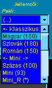

|
|
Fix összeállítású, megkevert kártyacsomagok
|
A pakliválasztó listában minden kártyacsomag neve mellett zárójelben fel van tüntetve,
hogy hány lapból áll. A játék elején ezt keveri össze a program, s ebbõl húznak a
játékosok, amíg van belõle. Amint elfogy, a rendszer készít egy új paklit ugyanolyan
kártyákkal és utána abból fognak húzni. A pakli elfogyását egy rendszerüzenet is
jelzi a Csevegõben.
|

|
A Turistakártya hagyományos változata (magyar MTSZ turistajelzésekkel).
A Turistakártya hagyományos változatához hasonlít, szlovák (KST) turistajelzésekkel.
A Turistakártya hagyományos változatához hasonlít, román turistajelzésekkel. Kevesebb turistajel, több utasító lap!
Ez leginkább kezdõknek ajánlott, vagy olyanoknak, akik nyugodtabb játékra vágynak.
Az ismert UNO-hoz hasonló játék turistajelzésekkel.
Mozgalmas játékot ígér a magyar turistajelzéseken alapuló legteljesebb pakli. Még az egészen különbözõ
turistajelzésektõl is van esély megszabadulni a játék során, nem is akárhogyan!
|
|
|

 Bevezetõ |
Bevezetõ |
 Szabályok |
Szabályok |
 Súgó |
Súgó |
 Paklik
Paklik


![[HU]](../docimg/hu.gif)
![[SK]](../docimg/sk.gif)
![[RO]](../docimg/ro.gif)